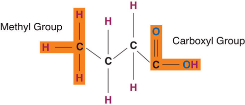

Get your dose of omega-3 fats for good health.
Why Omega-3 Fatty Acids Are Essential
(click to see video)Dr. Gerard L. Guillory reviews the benefits of omega-3 fatty acids in this video, as part of a “10 Steps to Better Health” series.
In the 1920s, anthropologist Vilhjalmur Stefansson lived with and studied a group of Inuit. The Inuit were fishers and hunters, primarily of sea mammals such as whales, walruses, and seals. They consumed a high-protein, high-fat diet. In fact, the Inuit consumed an average of 75 percent of their daily energy intake from fat.Patricia Gadsby, “The Inuit Paradox,” Discover, 1 October 2004. http://discovermagazine.com/2004/oct/inuit-paradox/article_print. Stefansson’s research focused on the fact that the Inuit diet had no adverse effects on either their health or his own.Lieb, C. W. “The Effects of an Exclusive Long-Continued Meat Diet.” JAMA 87, no. 1 (1926): 25–26. doi:10.1001/jama.1926.02680010025006
These findings were supported by a later study in 1972, when the Greenland Inuit first caught the attention of Dr. H. O. Bang from Aalborg University in Denmark. He noted that although the Inuit consumed massive amounts of fatty ocean fish, which are packed with omega-3s, none of the Inuit tested showed signs of heart disease. In addition, there was significantly less evidence of joint disease and skin disease than found in Western countries. Further research led Bang and his associate, Dyerberg, to conclude that the omega-3 fatty acids (docosahexaenoic acid, or DHA, and eicosapentaenoic acid, or EPA) present in the diet offer significant health benefits:Bang, H.O. and J. Dyerberg. “Fatty Acid Composition of the Plasma Lipids in Greenland Eskimos.” Am J Clin Nutr 28 (1975): 958–66.
What sources of omega-3 fatty acids would you include in your diet and why?
As you read further, you will learn the different types of fats, their essential roles in the body, and the potential health consequences and benefits of diets rich in particular lipids. You will be better equipped to decide the best way to get your nutritional punch from various fats in your diet.
Lipids are important fats that serve different roles in the human body. A common misconception is that fat is simply fattening. However, fat is probably the reason we are all here. Throughout history, there have been many instances when food was scarce. Our ability to store excess caloric energy as fat for future usage allowed us to continue as a species during these times of famine. So, normal fat reserves are a signal that metabolic processes are efficient and a person is healthy.
Lipids are a family of organic compounds that are mostly insoluble in water. Composed of fats and oils, lipids are molecules that yield high energy and have a chemical composition mainly of carbon, hydrogen, and oxygen. Lipids perform three primary biological functions within the body: they serve as structural components of cell membranes, function as energy storehouses, and function as important signaling molecules.
The three main types of lipids are triacylglycerols, phospholipids, and sterols. Triacylglycerols (also known as triglycerides) make up more than 95 percent of lipids in the diet and are commonly found in fried foods, vegetable oil, butter, whole milk, cheese, cream cheese, and some meats. Naturally occurring triacylglycerols are found in many foods, including avocados, olives, corn, and nuts. We commonly call the triacylglycerols in our food “fats” and “oils.” Fats are lipids that are solid at room temperature, whereas oils are liquid. As with most fats, triacylglycerols do not dissolve in water. The terms fats, oils, and triacylglycerols are discretionary and can be used interchangeably. In this chapter when we use the word fat, we are referring to triacylglycerols.
PhospholipidsThe second most common of the three basic lipids. Similar to triacylglycerols, phospholipids have an acid containing phosphorus in place of one of the fatty acids. These lipids appear in all cell membranes. make up only about 2 percent of dietary lipids. They are water-soluble and are found in both plants and animals. Phospholipids are crucial for building the protective barrier, or membrane, around your body’s cells. In fact, phospholipids are synthesized in the body to form cell and organelle membranes. In blood and body fluids, phospholipids form structures in which fat is enclosed and transported throughout the bloodstream.
Sterols are the least common type of lipid. Cholesterol is perhaps the best well-known sterol. Though cholesterol has a notorious reputation, the body gets only a small amount of its cholesterol through food—the body produces most of it. Cholesterol is an important component of the cell membrane and is required for the synthesis of sex hormones, vitamin D, and bile salts.
Later in this chapter, we will examine each of these lipids in more detail and discover how their different structures function to keep your body working.
Figure 5.1 Types of Lipids

The excess energy from the food we eat is digested and incorporated into adipose tissueFatty tissue in the body that consists of masses of fat-storing cells., or fatty tissue. Most of the energy required by the human body is provided by carbohydrates and lipids. As discussed in Chapter 4 "Carbohydrates", glucose is stored in the body as glycogen. While glycogen provides a ready source of energy, lipids primarily function as an energy reserve. As you may recall, glycogen is quite bulky with heavy water content, thus the body cannot store too much for long. Alternatively, fats are packed together tightly without water and store far greater amounts of energy in a reduced space. A fat gram is densely concentrated with energy—it contains more than double the amount of energy than a gram of carbohydrate. Energy is needed to power the muscles for all the physical work and play an average person or child engages in. For instance, the stored energy in muscles propels an athlete down the track, spurs a dancer’s legs to showcase the latest fancy steps, and keeps all the moving parts of the body functioning smoothly.
Unlike other body cells that can store fat in limited supplies, fat cells are specialized for fat storage and are able to expand almost indefinitely in size. An overabundance of adipose tissue can result in undue stress on the body and can be detrimental to your health. A serious impact of excess fat is the accumulation of too much cholesterolAn important component of the cell membrane. Required for the synthesis of sex hormones, vitamin D, and bile salts. in the arterial wall, which can thicken the walls of arteries and lead to cardiovascular diseaseA disease of the heart or blood vessels.. Thus, while some body fat is critical to our survival and good health, in large quantities it can be a deterrent to maintaining good health.
TriacylglycerolsThe most common of the three basic classes of lipids and the main form fat takes in both diet and the human body. A triacylglycerol is made up of three molecules of fatty acids and one molecule of glycerol. control the body’s internal climate, maintaining constant temperature. Those who don’t have enough fat in their bodies tend to feel cold sooner, are often fatigued, and have pressure sores on their skin from fatty acid deficiency. Triacylglycerols also help the body produce and regulate hormones. For example, adipose tissue secretes the hormone leptin, which regulates appetite. In the reproductive system, fatty acids are required for proper reproductive health; women who lack proper amounts may stop menstruating and become infertile. Omega-3 and omega-6 essential fatty acids help regulate cholesterol and blood clotting and control inflammation in the joints, tissues, and bloodstream. Fats also play important functional roles in sustaining nerve impulse transmission, memory storage, and tissue structure. More specifically in the brain, lipids are focal to brain activity in structure and in function. They help form nerve cell membranes, insulate neurons, and facilitate the signaling of electrical impulses throughout the brain.
Did you know that up to 30 percent of body weight is comprised of fat tissue? Some of this is made up of visceral fat or adipose tissue surrounding delicate organs. Vital organs such as the heart, kidneys, and liver are protected by visceral fat. The composition of the brain is outstandingly 60 percent fat, demonstrating the major structural role that fat serves within the body. You may be most familiar with subcutaneous fat, or fat underneath the skin. This blanket layer of tissue insulates the body from extreme temperatures and helps keep the internal climate under control. It pads our hands and buttocks and prevents friction, as these areas frequently come in contact with hard surfaces. It also gives the body the extra padding required when engaging in physically demanding activities such as ice- or roller skating, horseback riding, or snowboarding.
The dietary fats in the foods we eat break down in our digestive systems and begin the transport of precious micronutrients. By carrying fat-soluble nutrients through the digestive process, intestinal absorption is improved. This improved absorption is also known as increased bioavailabilityRefers to the proportion of nutrients that are absorbed or become available in the bloodstream.. Fat-soluble nutrients are especially important for good health and exhibit a variety of functions. Vitamins A, D, E, and K—the fat-soluble vitamins—are mainly found in foods containing fat. Some fat-soluble vitamins (such as vitamin A) are also found in naturally fat-free foods such as green leafy vegetables, carrots, and broccoli. These vitamins are best absorbed when combined with foods containing fat. Fats also increase the bioavailability of compounds known as phytochemicalsNonessential plant compounds considered to have a beneficial impact on human health., which are plant constituents such as lycopene (found in tomatoes) and beta-carotene (found in carrots). Phytochemicals are believed to promote health and well-being. As a result, eating tomatoes with olive oil or salad dressing will facilitate lycopene absorption. Other essential nutrients, such as essential fatty acids, are constituents of the fats themselves and serve as building blocks of a cell.
Figure 5.2 Food Sources for Fat Soluble Vitamins

Note that removing the lipid elements from food also takes away the food’s fat-soluble vitamin content. When products such as grain and dairy are processed, these essential nutrients are lost. Manufacturers replace these nutrients through a process called enrichment.
Remember, fat-soluble nutrients require fat for effective absorption. For your next snack, look for foods that contain vitamins A, D, E, and K. Do these foods also contain fat that will help you absorb them? If not, think of ways to add a bit of healthy fat to aid in their absorption. (For more details on healthy fat, refer to Section 5.4 "Understanding Blood Cholesterol" of this chapter.)
Fat-rich foods naturally have a high caloric density. Foods that are high in fat contain more calories than foods high in protein or carbohydrates. As a result, high-fat foods are a convenient source of energy. For example, 1 gram of fat or oil provides 9 kilocalories of energy, compared with 4 kilocalories found in 1 gram of carbohydrate or protein. Depending on the level of physical activity and on nutritional needs, fat requirements vary greatly from person to person. When energy needs are high, the body welcomes the high-caloric density of fats. For instance, infants and growing children require proper amounts of fat to support normal growth and development. If an infant or child is given a low-fat diet for an extended period, growth and development will not progress normally. Other individuals with high-energy needs are athletes, people who have physically demanding jobs, and those recuperating from illness.
When the body has used all of its calories from carbohydrates (this can occur after just twenty minutes of exercise), it initiates fat usage. A professional swimmer must consume large amounts of food energy to meet the demands of swimming long distances, so eating fat-rich foods makes sense. In contrast, if a person who leads a sedentary lifestyle eats the same high-density fat foods, they will intake more fat calories than their body requires within just a few bites. Use caution—consumption of calories over and beyond energy requirements is a contributing factor to obesity.
Fat contains dissolved compounds that contribute to mouth-watering aromas and flavors. Fat also adds texture to food. Baked foods are supple and moist. Frying foods locks in flavor and lessens cooking time. How long does it take you to recall the smell of your favorite food cooking? What would a meal be without that savory aroma to delight your senses and heighten your preparedness for eating a meal?
Fat plays another valuable role in nutrition. Fat contributes to satietyThe feeling of being satisfied or full., or the sensation of fullness. When fatty foods are swallowed the body responds by enabling the processes controlling digestion to retard the movement of food along the digestive tract, thus promoting an overall sense of fullness. Oftentimes before the feeling of fullness arrives, people overindulge in fat-rich foods, finding the delectable taste irresistible. Indeed, the very things that make fat-rich foods attractive also make them a hindrance to maintaining a healthful diet.
While fats provide delicious smells, tastes, and textures to our foods, they also provide numerous calories. To allow your body to experience the satiety effect of the fat before you overindulge, try savoring rich foods. Eating slowly will allow you to both fully enjoy the experience and be sated with a smaller portion. Remember to take your time. Drink water in between bites or eat a lower fat food before and after a higher fat food. The lower-fat foods will provide bulk, but fewer calories.
Lipids are unique organic compounds, each serving key roles and performing specific functions within the body. As we discuss the various types of lipids (triacylglycerols, phospholipids, and sterols) in further detail, we will compare their structures and functions and examine their impact on human health.
Triacylglycerols are the main form of lipid found in the body and in the diet. Fatty acids and glycerol are the building blocks of triacylglycerols. Glycerol is a thick, smooth, syrupy compound that is often used in the food industry. To form a triacylglycerol, a glycerol molecule is joined by three fatty acid chains. Triacylglycerols contain varying mixtures of fatty acids.
Fatty acids determine if the compound is solid or liquid at room temperature. Fatty acidsAn organic compound that contains a carboxylic acid (−COOH) group at one end and a methyl group at the other (−CH3). consist of a carboxylic acid (−OOH) group on one end of a carbon chain and a methyl group (−CH3) on the other end. Fatty acids can differ from one another in two important ways—carbon chain length and degree of saturation.
Fatty acids have different chain lengths and different compositions. Foods have fatty acids with chain lengths between four and twenty-four carbons and most of them contain an even number of carbon atoms. When the carbon chain length is shorter, the melting point of the fatty acid becomes lower—and the fatty acid becomes more liquid.
Figure 5.3 Structures of a Saturated, Monounsaturated, and Polyunsaturated Fat

Fatty acid chains are held together by carbon atoms that attach to each other and to hydrogen atoms. The term saturation refers to whether or not a fatty acid chain is filled (or “saturated”) to capacity with hydrogen atoms. If each available carbon bond holds a hydrogen atom we call this a saturated fatty acidA fatty acid that contains the maximum number of hydrogen atoms with no points of unsaturation. chain. All carbon atoms in such a fatty acid chain are bonded with single bonds. Sometimes the chain has a place where hydrogen atoms are missing. This is referred to as the point of unsaturationThe place on a molecule where additional hydrogen atoms can attach..
When one or more bonds between carbon atoms are a double bond (C=C), that fatty acid is called an unsaturated fatty acidA fatty acid that is missing hydrogen atoms with one or more point of unsaturation., as it has one or more points of unsaturation. Any fatty acid that has only one double bond is a monounsaturated fatty acidA fatty acid that contains one point of unsaturation., an example of which is olive oil (75 percent of its fat is monounsaturated). Monounsaturated fats help regulate blood cholesterol levels, thereby reducing the risk for heart disease and stroke. A polyunsaturated fatty acidA fatty acid that contains two or more points of unsaturation. is a fatty acid with two or more double bonds or two or more points of unsaturation. Soybean oil contains high amounts of polyunsaturated fatty acids. Both monounsaturated fats and polyunsaturated fats provide nutrition that is essential for normal cell development and healthy skin.
Foods that have a high percentage of saturated fatty acids tend to be solid at room temperature. Examples of these are fats found in chocolate (stearic acid, an eighteen-carbon saturated fatty acid is a primary component) and meat. Foods rich in unsaturated fatty acids, such as olive oil (oleic acid, an eighteen-carbon unsaturated fatty acid, is a major component) tend to be liquid at room temperature. Flaxseed oil is rich in alpha-linolenic acid, which is an unsaturated fatty acid and becomes a thin liquid at room temperature.
Knowing the connection between chain length, degree of saturation, and the state of the fatty acid (solid or liquid) is important for making food choices. If you decide to limit or redirect your intake of fat products, then choosing unsaturated fat is more beneficial than choosing a saturated fat. This choice is easy enough to make because unsaturated fats tend to be liquid at room temperature (for example, olive oil) whereas saturated fats tend to be solid at room temperature (for example, butter). Avocados are rich in unsaturated fats. Most vegetable and fish oils contain high quantities of polyunsaturated fats. Olive oil and canola oil are also rich in monounsaturated fats. Conversely, tropical oils are an exception to this rule in that they are liquid at room temperature yet high in saturated fat. Palm oil (often used in food processing) is highly saturated and has been proven to raise blood cholesterol. Shortening, margarine, and commercially prepared products (in general) report to use only vegetable-derived fats in their processing. But even so, much of the fat they use may be in the saturated and trans fat categories.
The introduction of a carbon double bond in a carbon chain, as in an unsaturated fatty acid, can result in different structures for the same fatty acid composition. When the hydrogen atoms are bonded to the same side of the carbon chain, it is called a cis fatty acidA fatty acid with the hydrogen atoms bonded to the same side of the carbon chain.. Because the hydrogen atoms are on the same side, the carbon chain has a bent structure. Naturally occurring fatty acids usually have a cis configuration.
In a trans fatty acidA fatty acid that has hydrogens attached on opposite sides of the carbon chain., the hydrogen atoms are attached on opposite sides of the carbon chain. Unlike cis fatty acids, most trans fatty acids are not found naturally in foods, but are a result of a process called hydrogenation. Hydrogenation is the process of adding hydrogen to the carbon double bonds, thus making the fatty acid saturated (or less unsaturated, in the case of partial hydrogenation). This is how vegetable oils are converted into semisolid fats for use in the manufacturing process.
According to the ongoing Harvard Nurses Health Study, trans fatty acids have been associated with increased risk for coronary heart disease because of the way they negatively impact blood cholesterol levels.Harvard School of Public Health. “It’s Time to End the Low-Fat Myth.” Introduction to “Fats and Cholesterol: Out with the Bad, In with the Good” in The Nutrition Source. http://www.hsph.harvard.edu/nutritionsource/what-should-you-eat/fats-full-story/#references.
Interestingly, some naturally occurring trans fats do not pose the same health risks as their artificially engineered counterparts. These trans fats are found in ruminant animals such as cows, sheep, and goats, resulting in trans fatty acids being present in our meat, milk, and other dairy product supply. Reports from the US Department of Agriculture (USDA) indicate that these trans fats comprise 15 to 20 percent of the total trans-fat intake in our diet. While we know that trans fats are not exactly harmless, it seems that any negative effect naturally occurring trans fats have are counteracted by the presence of other fatty acid molecules in these animal products, which work to promote human health.
Fatty acids are vital for the normal operation of all body systems. The circulatory system, respiratory system, integumentary system, immune system, brain, and other organs require fatty acids for proper function. The body is capable of synthesizing most of the fatty acids it needs from food. These fatty acids are known as nonessential fatty acidsA fatty acid that can be synthesized by the body.. However, there are some fatty acids that the body cannot synthesize and these are called essential fatty acidsA fatty acid that the body cannot synthesize and must be supplied through the diet.. It is important to note that nonessential fatty acids doesn’t mean unimportant; the classification is based solely on the ability of the body to synthesize the fatty acid.
Essential fatty acids must be obtained from food. They fall into two categories—omega-3 and omega-6. The 3 and 6 refer to the position of the first carbon double bond and the omega refers to the methyl end of the chain. Omega-3 and omega-6 fatty acids are precursors to important compounds called eicosanoidsCompounds derived from polyunsaturated fatty acids that control several body functions.. Eicosanoids are powerful hormones that control many other hormones and important body functions, such as the central nervous system and the immune system. Eicosanoids derived from omega-6 fatty acids are known to increase blood pressure, immune response, and inflammation. In contrast, eicosanoids derived from omega-3 fatty acids are known to have heart-healthy effects. Given the contrasting effects of the omega-3 and omega-6 fatty acids, a proper dietary balance between the two must be achieved to ensure optimal health benefits.
Essential fatty acids play an important role in the life and death of cardiac cells, immune system function, and blood pressure regulation. Docosahexaenoic acid (DHA)An omega-3 fatty acid that is especially important for brain growth and development in infants. is an omega-3 essential fatty acid shown to play important roles in synaptic transmission in the brain during fetal development.
Some excellent sources of omega-3 and omega-6 essential fatty acids are fish, flaxseed oil, hemp, walnuts, and leafy vegetables. Because these essential fatty acids are easily accessible, essential fatty acid deficiency is extremely rare.
There are many sources of omega-3 foods.
It is important to strike a proper balance between omega-3 and omega-6 fats in your diet. Research suggests that a diet that is too high in omega-6 fats distorts the balance of proinflammatory agents, promoting chronic inflammation and causing the potential for health problems such as asthma, arthritis, allergies, or diabetes. Omega-6 fats compete with omega-3 fats for enzymes and will actually replace omega-3 fats. The typical western diet is characterized by an excessive consumption of foods high in omega-6 fatty acids. To gain proper balance between the two, increase your omega-3 fat intake by eating more fatty fish or other sources of omega-3 fatty acids at least two times per week.
The fatty-acid profile of the diet directly correlates to the tissue lipid profile of the body. It may not solely be the quantity of dietary fat that matters. More directly, the type of dietary fat ingested has been shown to affect body weight, composition, and metabolism. The fatty acids consumed are often incorporated into the triacylglycerols within the body. Evidence confirms that saturated fatty acids are linked to higher rates of weight retention when compared to other types of fatty acids. Alternatively, the fatty acids found in fish oil are proven to reduce the rate of weight gain as compared to other fatty acids.Mori, T. “Dietary fish oil upregulates intestinal lipid metabolism and reduces body weight gain in C57BL/6J mice.” J Nutr. 2007 Dec;137(12):2629-34. http://www.ncbi.nlm.nih.gov/pubmed/18029475
Like triacylglycerols, phospholipids have a glycerol backbone. But unlike triacylglycerols, phospholipids are diglycerides (two fatty-acid molecules attached to the glycerol backbone) while their third fatty-acid chain has a phosphate group coupled with a nitrogen-containing group. This unique structure makes phospholipids water soluble. Phospholipids are what we call amphiphilicA compound that has both water-loving and fat-loving properties.—the fatty-acid sides are hydrophobic (dislike water) and the phosphate group is hydrophilic (likes water).
In the body phospholipids bind together to form cell membranes. The amphiphilic nature of phospholipids governs their function as components of cell membranes. The phospholipids form a double layer in cell membranes, thus effectively protecting the inside of the cell from the outside environment while at the same time allowing for transport of fat and water through the membrane.
Phospholipids are ideal emulsifiersCompound that allow two immiscible liquids to combine so that no separation occurs. that can keep oil and water mixed. Emulsions are mixtures of two liquids that do not mix. Without emulsifiers, the fat and water content would be somewhat separate within food. Lecithin (phosphatidylcholine), found in egg yolk, honey, and mustard, is a popular food emulsifier. Mayonnaise demonstrates lecithin’s ability to blend vinegar and oil to create the stable, spreadable condiment that so many enjoy. Food emulsifiers play an important role in making the appearance of food appetizing. Adding emulsifiers to sauces and creams not only enhances their appearance but also increases their freshness.
Lecithin’s crucial role within the body is clear, because it is present in every cell throughout the body; 28 percent of brain matter is composed of lecithin and 66 percent of the fat in the liver is lecithin. Many people attribute health-promoting properties to lecithin, such as its ability to lower blood cholesterol and aid with weight loss. There are several lecithin supplements on the market broadcasting these claims. However, as the body can make most phospholipids, it is not necessary to consume them in a pill. The body makes all of the lecithin that it needs.
Sterols have a very different structure from triacylglycerols and phospholipids. Most sterols do not contain any fatty acids but rather multiring structures. They are complex molecules that contain interlinking rings of carbon atoms, with side chains of carbon, hydrogen, and oxygen attached. Cholesterol is the best-known sterol because of its role in heart disease. It forms a large part of the plaque that narrows the arteries in atherosclerosis. In stark contrast, cholesterol does have specific beneficial functions to perform in the body. Like phospholipids, cholesterol is present in all body cells as it is an important substance in cell membrane structure. Approximately 25 percent of cholesterol in the body is localized in brain tissue. Cholesterol is used in the body to make a number of important things, including vitamin D, glucocorticoids, and the sex hormones, progesterone, testosterone, and estrogens. Notably, the sterols found in plants resemble cholesterol in structure. However, plant sterols inhibit cholesterol absorption in the human body, which can contribute to lower cholesterol levels.
Although cholesterol is preceded by its infamous reputation, it is clearly a vital substance in the body that poses a concern only when there is excess accumulation of it in the blood. Like lecithin, the body can synthesize cholesterol.
Lipids are large molecules and generally are not water-soluble. Like carbohydrates and protein, lipids are broken into small components for absorption. Since most of our digestive enzymes are water-based, how does the body break down fat and make it available for the various functions it must perform in the human body?
The first step in the digestion of triacylglycerols and phospholipids begins in the mouth as lipids encounter saliva. Next, the physical action of chewing coupled with the action of emulsifiers enables the digestive enzymes to do their tasks. The enzyme lingual lipaseAn enzyme responsible for the breakdown of triacylglycerols and phospholipids., along with a small amount of phospholipid as an emulsifier, initiates the process of digestion. These actions cause the fats to become more accessible to the digestive enzymes. As a result, the fats become tiny droplets and separate from the watery components.
Figure 5.4 Lipid Digestion
In the stomach, gastric lipase starts to break down triacylglycerols into diglyceridesA product of lipid digestion, consisting of a glycerol molecule that has two fatty acids attached. and fatty acids. Within two to four hours after eating a meal, roughly 30 percent of the triacylglycerols are converted to diglycerides and fatty acids. The stomach’s churning and contractions help to disperse the fat molecules, while the diglycerides derived in this process act as further emulsifiers. However, even amid all of this activity, very little fat digestion occurs in the stomach.
As stomach contents enter the small intestine, the digestive system sets out to manage a small hurdle, namely, to combine the separated fats with its own watery fluids. The solution to this hurdle is bileA substance secreted by the liver that aids in the absorption and digestion of fats.. Bile contains bile salts, lecithin, and substances derived from cholesterol so it acts as an emulsifier. It attracts and holds on to fat while it is simultaneously attracted to and held on to by water. Emulsification increases the surface area of lipids over a thousand-fold, making them more accessible to the digestive enzymes.
Once the stomach contents have been emulsified, fat-breaking enzymes work on the triacylglycerols and diglycerides to sever fatty acids from their glycerol foundations. As pancreatic lipase enters the small intestine, it breaks down the fats into free fatty acids and monoglyceridesA product of lipid digestion, consisting of a glycerol molecule with one fatty acid attached.. Yet again, another hurdle presents itself. How will the fats pass through the watery layer of mucous that coats the absorptive lining of the digestive tract? As before, the answer is bile. Bile salts envelop the fatty acids and monoglycerides to form micelles. Micelles have a fatty acid core with a water-soluble exterior. This allows efficient transportation to the intestinal microvillus. Here, the fat components are released and disseminated into the cells of the digestive tract lining.

Fats can travel through the watery environment of the body due to the process of emulsion.
Just as lipids require special handling in the digestive tract to move within a water-based environment, they require similar handling to travel in the bloodstream. Inside the intestinal cells, the monoglycerides and fatty acids reassemble themselves into triacylglycerols. Triacylglycerols, cholesterol, and phospholipids form lipoproteinsProteins that contains a lipid which serves to transport fat through blood and lymph. when joined with a protein carrier. Lipoproteins have an inner core that is primarily made up of triacylglycerols and cholesterol esters (a cholesterol ester is a cholesterol linked to a fatty acid). The outer envelope is made of phospholipids interspersed with proteins and cholesterol. Together they form a chylomicronChylomicron clusters form when lipids are combined with carrier proteins in the cells of the intestinal lining. Chylomicron is a vehicle of transport for fats throughout the watery environment of the body to the liver and other tissues., which is a large lipoprotein that now enters the lymphatic system and will soon be released into the bloodstream via the jugular vein in the neck. Chylomicrons transport food fats perfectly through the body’s water-based environment to specific destinations such as the liver and other body tissues.
Cholesterols are poorly absorbed when compared to phospholipids and triacylglycerols. Cholesterol absorption is aided by an increase in dietary fat components and is hindered by high fiber content. This is the reason that a high intake of fiber is recommended to decrease blood cholesterol. Foods high in fiber such as fresh fruits, vegetables, and oats can bind bile salts and cholesterol, preventing their absorption and carrying them out of the colon.
If fats are not absorbed properly as is seen in some medical conditions, a person’s stool will contain high amounts of fat. If fat malabsorption persists the condition is known as steatorrhea. Steatorrhea can result from diseases that affect absorption, such as Crohn’s disease and cystic fibrosis.
Before the prepackaged food industry, fitness centers, and weight-loss programs, our ancestors worked hard to even locate a meal. They made plans, not for losing those last ten pounds to fit into a bathing suit for vacation, but rather for finding food. Today, this is why we can go long periods without eating, whether we are sick with a vanished appetite, our physical activity level has increased, or there is simply no food available. Our bodies reserve fuel for a rainy day.
One way the body stores fat was previously touched upon in Chapter 4 "Carbohydrates". The body transforms carbohydrates into glycogen that is in turn stored in the muscles for energy. When the muscles reach their capacity for glycogen storage, the excess is returned to the liver, where it is converted into triacylglycerols and then stored as fat.
In a similar manner, much of the triacylglycerols the body receives from food is transported to fat storehouses within the body if not used for producing energy. The chylomicrons are responsible for shuttling the triacylglycerols to various locations such as the muscles, breasts, external layers under the skin, and internal fat layers of the abdomen, thighs, and buttocks where they are stored by the body in adipose tissue for future use. How is this accomplished? Recall that chylomicrons are large lipoproteins that contain a triacylglycerol and fatty-acid core. Capillary walls contain an enzyme called lipoprotein-lipase that dismantles the triacylglycerols in the lipoproteins into fatty acids and glycerol, thus enabling these to enter into the adipose cells. Once inside the adipose cells, the fatty acids and glycerol are reassembled into triacylglycerols and stored for later use. Muscle cells may also take up the fatty acids and use them for muscular work and generating energy. When a person’s energy requirements exceed the amount of available fuel presented from a recent meal or extended physical activity has exhausted glycogen energy reserves, fat reserves are retrieved for energy utilization.
As the body calls for additional energy, the adipose tissue responds by dismantling its triacylglycerols and dispensing glycerol and fatty acids directly into the blood. Upon receipt of these substances the energy-hungry cells break them down further into tiny fragments. These fragments go through a series of chemical reactions that yield energy, carbon dioxide, and water.
You may have heard of the abbreviations LDL and HDL with respect to heart health. These abbreviations refer to low-density lipoprotein (LDL) and high-density lipoprotein (HDL), respectively. Lipoproteins are characterized by size, density, and composition. As the size of the lipoprotein increases, the density decreases. This means that HDL is smaller than LDL. Why are they referred to as “good” and “bad” cholesterol? What should you know about these lipoproteins?
Recall that chylomicrons are transporters of fats throughout the watery environment within the body. After about ten hours of circulating throughout the body, chylomicrons gradually release their triacylglycerols until all that is left of their composition is cholesterol-rich remnants. These remnants are used as raw materials by the liver to formulate specific lipoproteins. Following is a list of the various lipoproteins and their functions:
Heart attack and atherosclerosis are conditions often caused by cholesterol that has accumulated and thickened in the walls of arteries. HDLs and LDLs are directly connected to these life-threatening ailments. By comparing and contrasting the roles each of these lipoproteins serves in the health of heart and blood vessels, you will be able to construct and evaluate a plan of action for your personal health. Consider the following lipoprotein facts:
For healthy total blood cholesterol, the desired range you would want to maintain is under 200 mg/dL. More specifically, when looking at individual lipid profiles, a low amount of LDL and a high amount of HDL prevents excess buildup of cholesterol in the arteries and wards off potential health hazards. An LDL level of less than 100 milligrams per deciliter is ideal while an LDL level above 160 milligrams per deciliter would be considered high. In contrast, a low value of HDL is a telltale sign that a person is living with major risks for disease. Values of less than 40 milligrams per deciliter for men and 50 milligrams per deciliter for women mark a risk factor for developing heart disease. In short, elevated LDL blood lipid profiles indicate an increased risk of heart attack, while elevated HDL blood lipid profiles indicate a reduced risk.
The University of Maryland Medical Center reports that omega-3 fatty acids promote lower total cholesterol and lower triacylglycerols in people with high cholesterol.University of Maryland Medical Center. “Omega-3 fatty acids.” http://www.umm.edu/altmed/articles/omega-3-000316.htm It is suggested that people consume omega-3 fatty acids such as alpha-linolenic acid in their diets regularly. Polyunsaturated fatty acids are especially beneficial to consume because they both lower LDL and elevate HDL, thus contributing to healthy blood cholesterol levels. The study also reveals that saturated and trans fatty acids serve as catalysts for the increase of LDL cholesterol. Additionally, trans fatty acids raise HDL levels, which can impact negatively on total blood cholesterol.
Being conscious of the need to reduce cholesterol means limiting the consumption of saturated fats and trans fats. Remember that saturated fats found in some meat, whole-fat dairy products, and tropical oils elevate your total cholesterol. Trans fats, such as the ones often found in margarines, processed cookies, pastries, crackers, fried foods, and snack foods also elevate your cholesterol levels. Read and select from the following suggestions as you plan ahead:
Soluble fiber reduces cholesterol absorption in the bloodstream. Try eating more oatmeal, oat bran, kidney beans, apples, pears, citrus fruits, barley, and prunes.
The danger of consuming foods rich in cholesterol and saturated and trans fats cannot be overemphasized. Regular testing can provide the foreknowledge necessary to take action to help prevent any life-threatening events.
Current guidelines recommend testing for anyone over age twenty. If there is family history of high cholesterol, your healthcare provider may suggest a test sooner than this. Testing calls for a blood sample to be drawn after nine to twelve hours of fasting for an accurate reading. (By this time, most of the fats ingested from the previous meal have circulated through the body and the concentration of lipoproteins in the blood will have stabilized.)
According to the National Institutes of Health (NIH), the following total cholesterol values are used to target treatment:National Heart, Lung, and Blood Institute, National Institutes of Health. “High Blood Cholesterol: What You Need to Know.” NIH Publication No. 05-3290. (Revised June 2005). Section 2.01. http://www.nhlbi.nih.gov/health/public/heart/chol/wyntk.htm.
According to the NIH, the following desired values are used to measure an overall lipid profile:
You may reason that if some fats are healthier than other fats, why not consume as much healthy fat as desired? Remember, everything in moderation. As we review the established guidelines for daily fat intake, the importance of balancing fat consumption with proper fat sources will be explained.
The acceptable macronutrient distribution range (AMDR) from the Dietary Reference Intake Committee for adult fat consumption is as follows:Institute of Medicine. “Dietary Reference Intakes: Macronutrients.” Accessed October 5, 2012. http://www.iom.edu/~/media/Files/Activity%20Files/Nutrition/DRIs/DRI _Macronutrients.pdf
The current AMDR for child and adolescent fat consumption (for children over four) are as follows:
Population-based studies of American diets have shown that intake of saturated fat is more excessive than intake of trans fat and cholesterol. Saturated fat is a prominent source of fat for most people as it is so easily found in animal fats, tropical oils such as coconut and palm oil, and full-fat dairy products. Oftentimes the fat in the diet of an average young person comes from foods such as cheese, pizza, cookies, chips, desserts, and animal meats such as chicken, burgers, sausages, and hot dogs. To aim for healthier dietary choices, the American Heart Association (AHA) recommends choosing lean meats and vegetable alternatives, choosing dairy products with low fat content, and minimizing the intake of trans fats. The AHA guidelines also recommend consuming fish, especially oily fish, at least twice per week.American Heart Association. “Frequently Asked Questions About Fish.” http://www.heart.org/HEARTORG/General/Frequently-Asked-Questions-About-Fish _UCM_306451_Article.jsp. These more appropriate dietary choices will allow for enjoyment of a wide variety of foods while providing the body with the recommended levels of fat from healthier sources. Evaluate the following sources of fat in your overall dietary pattern:
Recall that the body requires fatty acids and is adept at synthesizing the majority of these from fat, protein, and carbohydrate. However, when we say essential fatty acid we are referring to the two fatty acids that the body cannot create on its own, namely, linolenic acidAn omega-3 fatty acid that is essential for human health. and linoleic acidAn omega-6 fatty acid that is essential for human health..
As our food choices evolve, the sources of omega-6 fatty acids in our diets are increasing at a much faster rate than sources of omega-3 fatty acids. Omega-3s are plentiful in diets of nonprocessed foods where grazing animals and foraging chickens roam free, eating grass, clover, alfalfa, and grass-dwelling insects. In contrast, today’s western diets are bombarded with sources of omega-6. For example, we have oils derived from seeds and nuts and from the meat of animals that are fed grain. Vegetable oils used in fast-food preparations, most snack-foods, cookies, crackers, and sweet treats are also loaded with omega-6 fatty acids. Also, our bodies synthesize eicosanoids from omega-6 fatty acids and these tend to increase inflammation, blood clotting, and cell proliferation, while the hormones synthesized from omega-3 fatty acids have just the opposite effect.
While omega-6 fatty acids are essential, they can be harmful when they are out of balance with omega-3 fatty acids. Omega-6 fats are required only in small quantities. Researchers believe that when omega-6 fats are out of balance with omega-3 fats in the diet they diminish the effects of omega-3 fats and their benefits. This imbalance may elevate the risks for allergies, arthritis, asthma, coronary heart disease, diabetes, and many types of cancer, autoimmunity, and neurodegenerative diseases, all of which are believed to originate from some form of inflammation in the body. The recommendations for the ratio of omega-3 to omega-6 fatty acids vary from 5:1 to 10:1.
What does this mean for you? If your diet is low in omega-3 fats to begin with, then most of your essential fatty acids are from omega-6s. Stop. Do not set up a proinflammatory environment. Attaining proper balance between omega-3 fatty acids and omega-6 fatty acids means learning to make healthy choices and replacing bad fats with good ones that promote health and well-being.
What is the first thing that comes to mind when you read ingredients such as “partially hydrogenated oil” and “hydrogenated oil” on a food label? Do you think of heart disease, heart health, or atherosclerosis? Most people probably do not. As we uncover what hydrogenation is and why manufacturers use it, you will be better equipped to adhere to healthier dietary choices and promote your heart health.
Food manufacturers are aware that fatty acids are susceptible to attack by oxygen molecules because their points of unsaturation render them vulnerable in this regard. When oxygen molecules attack these points of unsaturation the modified fatty acid becomes oxidized. The oxidation of fatty acids makes the oil rancid and gives the food prepared with it an unappetizing taste. Because oils can undergo oxidation when stored in open containers, they must be stored in airtight containers and possibly be refrigerated to minimize damage from oxidation. Hydrogenation poses a solution that food manufacturers prefer.
When lipids are subjected to hydrogenation, the molecular structure of the fat is altered. Hydrogenation is the process of adding hydrogen to unsaturated fatty-acid chains, so that the hydrogen atoms are connected to the points of saturation and results in a more saturated fatty acid. Liquid oils that once contained more unsaturated fatty acids become semisolid or solid (upon complete hydrogenation) and behave like saturated fats. Oils initially contain polyunsaturated fatty acids. When the process of hydrogenation is not complete, for example, not all carbon double bonds have been saturated the end result is a partially hydrogenated oil. The resulting oil is not fully solid. Total hydrogenation makes the oil very hard and virtually unusable. Some newer products are now using fully hydrogenated oil combined with nonhydrogenated vegetable oils to create a usable fat.
Manufacturers favor hydrogenation as a way to prevent oxidation of oils and ensure longer shelf life. Partially hydrogenated vegetable oils are used in the fast food and processed food industries because they impart the desired texture and crispness to baked and fried foods. Partially hydrogenated vegetable oils are more resistant to breakdown from extremely hot cooking temperatures. Because hydrogenated oils have a high smoking pointThe temperature at which fat gives off a pungent blue gas. they are very well suited for frying. In addition, processed vegetable oils are cheaper than fats obtained from animal sources, making them a popular choice for the food industry.
Trans fatty acids occur in small amounts in nature, mostly in dairy products. However, the trans fats that are used by the food industry are produced from the hydrogenation process. Trans fats are a result of the partial hydrogenation of unsaturated fatty acids, which cause them to have a trans configuration, rather than the naturally occurring cis configuration.
No trans fats! Zero trans fats! We see these advertisements on a regular basis. So widespread is the concern over the issue that restaurants, food manufacturers, and even fast-food establishments proudly tout either the absence or the reduction of these fats within their products. Amid the growing awareness that trans fats may not be good for you, let’s get right to the heart of the matter. Why are trans fats so bad?
Processing naturally occurring fats to modify their texture from liquid to semisolid and solid forms results in the development of trans fats, which have been linked to an increased risk for heart disease. Trans fats are used in many processed foods such as cookies, cakes, chips, doughnuts, and snack foods to give them their crispy texture and increased shelf life. However, because trans fats can behave like saturated fats, the body processes them as if they were saturated fats. Consuming large amounts of trans fats has been associated with tissue inflammation throughout the body, insulin resistance in some people, weight gain, and digestive troubles. In addition, the hydrogenation process robs the person of the benefits of consuming the original oil because hydrogenation destroys omega-3 and omega-6 fatty acids. The AHA states that, like saturated fats, trans fats raise LDL “bad cholesterol,” but unlike saturated fats, trans fats lower HDL “good cholesterol.” The AHA advises limiting trans-fat consumption to less than 1 percent.
How can you benefit from this information? When selecting your foods, steer clear of anything that says “hydrogenated,” “fractionally hydrogenated,” or “partially hydrogenated,” and read food labels in the following categories carefully:
Choose brands that don’t use trans fats and that are low in saturated fats.
In response to the rising awareness and concern over the consumption of trans fat, various fat replacers have been developed. Fat substitutes aim to mimic the richness, taste, and smooth feel of fat without the same caloric content as fat. The carbohydrate-based replacers tend to bind water and thus dilute calories. Fat substitutes can also be made from proteins (for example, egg whites and milk whey). However, these are not very stable and are affected by changes in temperature, hence their usefulness is somewhat limited.
One classic cinnamon roll can have 5 grams of trans fat, which is quite high for a single snack. Foods such as pastries, frozen bakery goods, cookies, chips, popcorn, and crackers contain trans fat and often have their nutrient contents listed for a very small serving size—much smaller than what people normally consume—which can easily lead you to eat many “servings.” Labeling laws allow foods containing trans fat to be labeled “trans-fat free” if there are fewer than 0.5 grams per serving. This makes it possible to eat too much trans fat when you think you’re not eating any at all because it is labeled trans-fat free.
Always review the label for trans fat per serving. Check the ingredient list, especially the first three to four ingredients, for telltale signs of hydrogenated fat such as partially or fractionated hydrogenated oil. The higher up the words “partially hydrogenated oil” are on the list of ingredients, the more trans fat the product contains.
Measure out one serving and eat one serving only. An even better choice would be to eat a fruit or vegetable. There are no trans fats and the serving size is more reasonable for similar calories. Fruits and vegetables are packed with water, fiber, and many vitamins, minerals, phytonutrients, and antioxidants. At restaurants be aware that phrases such as “cooked in vegetable oil” might mean hydrogenated vegetable oil, and therefore trans fat.
Because heart disease, cancer, and stroke are the three leading causes of death in the United States, it is critical to address dietary and lifestyle choices that will ultimately decrease risk factors for these diseases. According to the US Department of Health and Human Services (HHS), the following risk factors are controllable: high blood pressure, high cholesterol, cigarette smoking, diabetes, poor diet, physical inactivity, being overweight, and obesity.
In light of that, we present the following informational tips to help you define, evaluate, and implement healthy dietary choices to last a lifetime. The amount and the type of fat that composes a person’s dietary profile will have a profound effect upon the way fat and cholesterol is metabolized in the body.
In proper amounts, cholesterol is a compound used by the body to sustain many important body functions. In excess, cholesterol is harmful if it accumulates in the structures of the body’s vast network of blood vessels. High blood LDL and low blood HDL are major indicators of blood cholesterol risk. The largest influence on blood cholesterol levels rests in the mix of saturated fat and trans fat in the diet. According to the Harvard School of Public Health, for every extra 2 percent of calories from trans fat consumed per day—about the amount found in a midsize order of French fries at a fast-food establishment—the risk of coronary heart disease increases by 23 percent.Harvard School of Public Health. “Fats and Cholesterol: Out with the Bad, In with the Good.” Section 2.02. http://www.hsph.harvard.edu/nutritionsource/what-should-you -eat/fats-full-story/. A buildup of cholesterol in the blood can lead to brittle blood vessels and a blockage of blood flow to the affected area.
How saturated is the fat in your diet? Is it really necessary to eat saturated fat when the body makes all the saturated fat that it needs? Saturated fats should fall into the “bad” category—the body does not demand this kind of fat and it is proven to be a forerunner of cardiovascular disease. In the United States and other developed countries, populations acquire their saturated fat content mostly from meat, seafood, poultry (with skin consumed), and whole-milk dairy products (cheese, milk, and ice cream). Some plant foods are also high in saturated fats, including coconut oil, palm oil, and palm kernel oil.
Dietary cholesterol does have a small impact on overall blood cholesterol levels, but not as much as some people may think. The average American female consumes 237 milligrams of dietary cholesterol per day and for males the figure is slightly higher—about 358 milligrams. The USDA dietary guidelines suggest a daily limit intake of cholesterol not to exceed 300 milligrams for healthy people and 200 milligrams for those who may be suffering from high cholesterol. Most people display little response to normal dietary cholesterol intake as the body responds by halting its own synthesis of the substance in favor of using the cholesterol obtained through food. Genetic factors may also influence the way a person’s body modifies cholesterol.
If left unchecked, improper dietary fat consumption can lead down a path to severe health problems. An increased level of lipids, triacylglycerols, and cholesterol in the blood is called hyperlipidemia. HyperlipidemiaA term that refers to any number of conditions characterized by excessive amounts of fat in the blood. is inclusive of several conditions but more commonly refers to high cholesterol and triacylglycerol levels. When blood lipid levels are high, any number of adverse health problems may ensue. Consider the following:
Remember that saturated fats are found in large amounts in foods of animal origin. They should be limited within the diet. Polyunsaturated fats are generally obtained from nonanimal sources. While they are beneficial for lowering bad cholesterol they also lower good cholesterol. They are better for you than saturated fats but are not to be consumed in excess. Monounsaturated fats are of plant origin and are found in most nuts, seeds, seed oils, olive oil, canola oil, and legumes. Monounsaturated fats are excellent because they not only lower bad cholesterol, but also they elevate the good cholesterol. Replace current dietary fats with an increased intake of monounsaturated fats.
Choose whole-grain and high-fiber foods. Reduced risk for cardiovascular disease has been associated with diets that are high in whole grains and fiber. Fiber also slows down cholesterol absorption. The AHA recommends that at least half of daily grain intake should originate from whole grains. The Adequate Intake value for fiber is 14 grams per 1,000 kilocalories. These amounts are based upon the amount of fiber that has been shown to reduce cardiovascular risk.
Do not be sedentary. Get more exercise on a regular basis. Increasing your energy expenditure by just twenty minutes of physical activity at least three times per week will improve your overall health. Physical exercise can help you manage or prevent high blood pressure and blood cholesterol levels. Regular activity raises HDL while at the same time decreases triacylglycerols and plaque buildup in the arteries. Calories are burned consistently, making it easier to lose and manage weight. Circulation will improve, the body will be better oxygenated, and the heart and blood vessels will function more efficiently.
On your next trip to the grocery store prepare yourself to read all food labels carefully and to seriously consider everything that goes into your shopping cart. Create a shopping list and divide your list into columns for “Best,” “Better,” “Good,” “Least Desirable,” and “Infrequent Foods.” As you refine your sense of dietary fat, here are key points to bear in mind:
As a delicious alternative to red meat, try preparing and eating at least one meal each week using beans. For interesting ideas and tips, visit http://www.swbeans.com.
Keep the following in mind as you strive toward a healthier diet:
Now that you have gained a wealth of information and food for thought to enable you to make changes to your dietary pattern we hope that your desire to pursue a healthier lifestyle has been solidified. While we realize that making grand strides in this direction may be awkward at first, even the smallest of accomplishments can produce noticeable results that will spur you on and perhaps spark the interest of friends and family to join you in this health crusade.
Becoming aware of the need to limit your total fat intake will facilitate your ability to make better choices. In turn, making better dietary choices requires gaining knowledge. As you understand that your food choices not only impact your personal physical health but also the delicate balance of our ecosystem, we are confident that you will successfully adapt to the dynamics of the ever-changing global food supply. Remember, the food choices you make today will benefit you tomorrow and into the years to come.